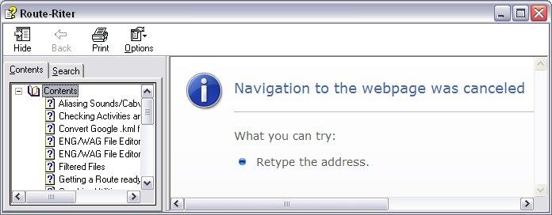
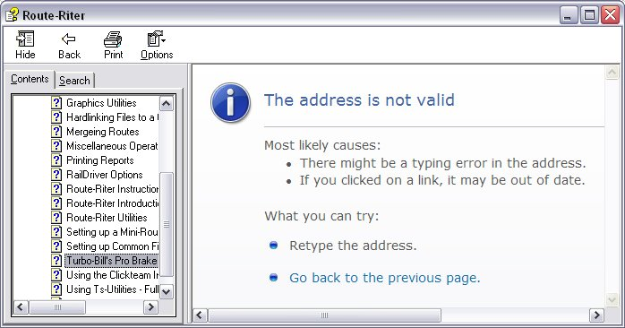
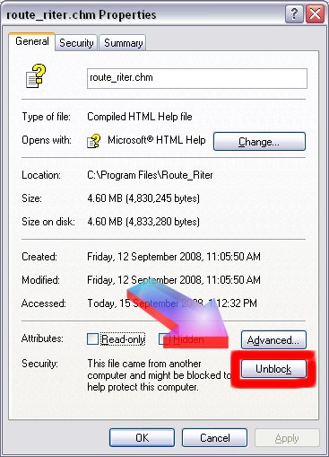

Windows 7 Security Issues When Opening MSTS Files
Route_Riter Help file won't open - "Navigation to the web page was canceled"
One of Microsoft's security updates included changes to the InfoTech protocol that blocks the ability to view remote content. These changes were introduced to reduce security vulnerabilities in HTML Help.
The net effect of this "security update" is that you may find you are unable to open the Route Riter Help file: you may see a message such as this:

Clicking on any option in Contents doesn't improve things at all

Fortunately, the cure is simple: browse to "route_riter.chm" in Explorer, Right-click, select "Properties", and click on "Unblock".

You will now be able to view the help file.